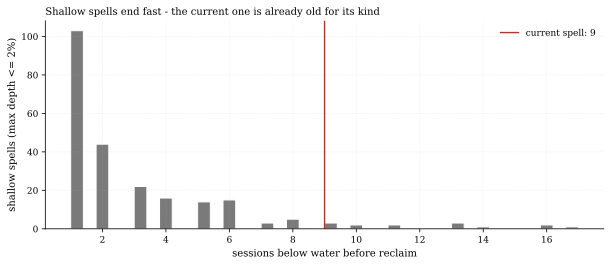
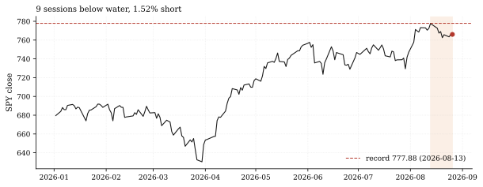
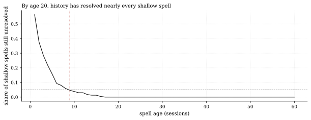

The one-paragraph version. The standing call recovery-spy-reclaim-ath (issued 2026-08-20) says SPY closes above its August 13 record (777.88) within 20 sessions. Through Wednesday the score: 4 sessions observed, 16 remaining, SPY at 766.08 - 1.52% short, needing a 1.54% gain. The empirical case is the strongest of any open call on the Track Record: of the 236 completed shallow spells (max depth no worse than 2% below the pre-spell high) in our 19-year panel, 96.2% ended within 10 sessions and 100% within 20 - and all 14 completed spells that ever reached the current spell's age of 9 sessions were resolved by age 25, exactly the horizon the call has left. History says this call should hit; the caveats are that the current spell already touched -1.96% under water (four basis points from exiting the shallow cohort) and that history's shallow spells never met a December with a 23-hour session change pending (Federal Register).
How we worked this problem
This is Recovery Lab issue 2 and a progress report on the standing call, whose condition (SPY close above 777.88) we mirror verbatim from the registry. We rebuilt the full spell bookkeeping from the panel: every run below the running maximum since 2007, its duration and maximum depth (measured against the pre-spell high - the reclaim level), split into shallow spells (at most 2% under water - the current regime) and the rest, with the ongoing final spell excluded from conditional statistics as right-censored. The frozen call prose said "1.13% below at issue" - that was the 2026-08-19 panel cut the issue-1 note used; by the call's anchor session the gap had widened to 1.96%, and on the current panel SPY is 1.52% short. All three numbers are reported; the grader scores closes against the fixed level, not the gap.
The data audit
| Source | Coverage | As-of | Role |
|---|---|---|---|
data/cache_panel_2007_2026.parquet | SPY daily closes, 2007-2026 | 2026-08-26 | spell history, current gap, call progress |
The reclaim condition and deadline come from articles/calls.json (level 777.88, 20 sessions, issued 2026-08-20). The FRED rates cache (as-of 2026-08-13) and the funding cache (as-of 2026-07-31) are not used.
The external read
The record and the stall are visible outside too. Reuters has the S&P 500 index notching its record close of 7,798.99 on August 13 on softer inflation data (Reuters, Aug 13)
- the same day as our SPY record of 777.88 (index and ETF tick on
different instruments; we quote the ETF because that is what the call grades). Bloomberg counted 25 all-time-high closes in 2026 by early August (Bloomberg, Aug 6), and Citadel Securities frames the summer as a "reset" in which semiconductor names shed roughly $1.5 trillion of market capitalization before the recovery (Citadel, August). Our cross-check: the record's date (Aug 13) and the pullback-then-record shape match the external tape; the 1.52% gap and 9-session age are the house panel's own arithmetic.
Exhibits
Exhibit 1 - shallow spells end fast; this one is already old. The distribution of durations for the 236 completed shallow spells: median 2 sessions, 96.2% gone by 10, 100% by 20. A 9-session-old shallow spell is already in the tail - which cuts both ways: most spells its age are over, and the ones that linger are the ones that stopped being shallow.

Exhibit 2 - the gap. SPY's 2026 path against the 777.88 record line: the August 3 first record in two months, the August 13 extension, and the 9 sessions below water since. The needed gain from Wednesday's 766.08 close is 1.54%.

Exhibit 3 - the survival curve. The share of completed shallow spells still unresolved by age: 3.8% at age 10, zero at age 20. The current spell's age is marked; the call's remaining horizon lands at spell age 25, an age no shallow spell in the sample ever exceeded without first deepening past the 2% definition.

So what - opportunities
- **The call grades closes against a fixed level, which removes path
- The conditional statistic is the whole story: 14-for-14 completed
- The spell framework is reusable: the same age-conditional survival
ambiguity:** one strong session - a 1.54% up day - resolves it; the Track Record scores mechanically.
shallow spells at age 9 resolved by age 25. If duration regimes are stable, the base case is a hit well inside the window.
computation grades any future "reclaim" claim - the Recovery Lab will re-run it as rows accumulate.
So what - risks
- Survivorship inside the definition: a shallow spell that deepens
- September regime risk: the 2026-12-06 extended-session change is
- ETF vs index: the call grades SPY (777.88); the quoted external
past 2% stops being shallow and exits the sample - the 14-for-14 conditional describes spells that stayed shallow, which is close to assuming the answer. The current spell already touched -1.96% on August 20; it was four basis points from exiting the cohort, and a 1.52% gap remains one bad session from doing so.
not inside this window, but September's macro calendar (the one that set the August 13 record on inflation data) can move 1.5% in either direction in a single 1.54%-type session - the exact gain the call needs, in either direction.
records are index prints - basis drift between the two can add or subtract a session at the margin.
Machinery: how this piece was produced
articles/2026-08-26-spy-ath-reclaim-clock/analysis.py reads the call's terms from articles/calls.json, rebuilds the below-running-max spell bookkeeping from the panel, computes the age-conditional statistics, and writes every number above to assets/numbers.json plus the three figures (SVG + PNG twins).
Reproduce with: ``bash .venv/Scripts/python articles/2026-08-26-spy-ath-reclaim-clock/analysis.py ``
Limitations
- Spell statistics are in-sample over 2007-2026; 14 completed age-9
- The 2% "shallow" boundary is the current regime's definition, chosen
- Measured through Wednesday 2026-08-26; the spell age and gap move with
- The frozen prose's 1.13%-at-issue reflects the 2026-08-19 panel cut
shallow spells is a small conditional cohort - the 100%-by-25 figure has wide, unquantified uncertainty bands, and the ongoing spell itself is excluded from it as unresolved.
to match the call's context, not a tested optimum.
every session.
the issue-1 note used; the current gap (1.52%) is the live figure and all three readings (1.13%, 1.96%, 1.52%) are disclosed.
Sources - external reading list
| Claim | Source |
|---|---|
| S&P 500 record close 7,798.99 on Aug 13 (index print; our SPY record 777.88 same day) | Reuters, Aug 13 2026 |
| 25 all-time-high closes in 2026 by early August | Bloomberg Money, Aug 6 2026 |
| The ~$1.5T semiconductor "reset" preceding the recovery | Citadel Securities - August: After The Reset |
| 23-hour Nasdaq session, live Dec 6 2026 | Federal Register, Apr 15 2026 |
calls-grader-parity; pandas; matplotlib